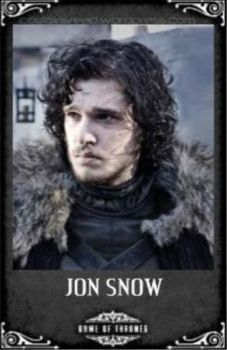
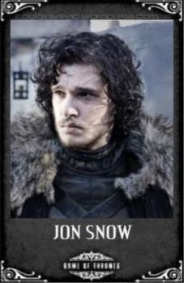
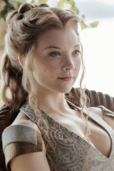
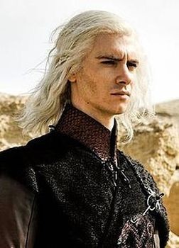

Game of Thrones is an American fantasy drama television series created by David Benioff and D. B. Weiss. It is an adaptation of A Song of Ice and Fire, George R. R. Martin's series of fantasy novels, the first of which is A Game of Thrones. It is filmed in Belfast and elsewhere in the United Kingdom, Canada, Croatia, Iceland, Malta, Morocco, Spain, and the United States. The series premiered on HBO in the United States on April 17, 2011, and its seventh season ended on August 27, 2017. The series will conclude with its eighth season premiering in 2019.
Set on the fictional continents of Westeros and Essos, Game of Thrones has several plot lines and a large ensemble cast but centers on three primary story arcs.
The first story arc centers on the Iron Throne of the Seven Kingdoms and follows a web of alliances and conflicts among the dynastic noble families either vying to claim the throne or fighting for independence from the throne.
The second story arc focuses on the last descendant of the realm's deposed ruling dynasty, exiled and plotting a return to the throne.
The third story arc centers on the longstanding brotherhood charged with defending the realm against the ancient threats of the fierce peoples and legendary creatures that lie far north, and an impending winter that threatens the realm.
The Kingdoms of Westeros
 

The North - House Stark (Winter is Coming)
The Starks ruled the North until the betrayal of Robb Stark at the Red Wedding by Roose Bolton. Since then, it has been the Boltons who rule the North with their seat shifted to Winterfell from the Dreadfort. Karstark, Manderly, Umber, Reed and Mormont are the major vassal houses who swear allegiance to the Warden of the North.
The Vale - House Arryn (As high as honor)
The Vale has been ruled by the Arryns since forever from their castle known as The Eyrie. After the death of Jon Arryn, Hand of the King to Robert Baratheon, there has been somewhat of a power vacuum in The Vale with Robin Arryn proving to be an incompetent ruler. Baelish, Waynwood and Royce are major vassal houses in The Vale.

The Riverlands - House Tully (Family, duty, honor)
The Riverlands are ruled by House Tully from its seat at Riverrun. The Riverlands were a constant battleground during the Targaryen conquest. Houses Whent, Blackwood, Frey and Mallister make up the major vassal houses who pledge their allegience to Riverrun.
The Stormlands - House Baratheon (Ours is the fury)
The Stormlands were captured by Orys Baratheon, Aegon Targaryen’s bastard half-brother, during the War of Conquest. Storm’s End was ruled ever since for almost three centuries until Robert’s rebellion. After Stannis’ flight from Storm’s End, it is unclear who currently occupies a seat there. Connington, Dondarrion, Selmy and Tarth are the major vassal houses of the Stormlands.


The Westerlands - House Lannister (Hear me roar!)
The Westerlands were known as the Kingdom of the Rock until before the Targaryen conquest. Since then, it has been ruled by House Lannister of Casterly Rock. It is one of the richest kingdoms of Westeros and was restored to glory under the able leadership of Tywin Lannister. Clegane, Payne, Swyft and Westerling are major vassal houses in the Westerlands.

The Reach - House Tyrell (Growing strong)
The Reach is ruled by House Tyrell of Highgarden. It is the most fertile and most populated kingdom of Westeros, supplying livestock, wine and foodgrains to rest the of the lesser fertile kingdoms. Currently, House Tyrell occupies a significant position in King’s Landing after their alliance with the Lannisters. House Oakheart, Tarly and Florent constitute major vassal houses.
The Principality of Dorne - House Martell (Unbowed, unbent, unbroken)
Dorne has been ruled by House Martell of Sunspear. After the assassination of Doran Martell, the region is now under the control of Ellaria Sand, Oberyn Martell’s paramour. Dorne was the only kingdom to retain its independence during Aegon’s conquest and later joined the seven kingdoms through a marriage alliance. House Yronwood, Allyrion and Dayne consist of major vassal houses.

Meereen - House Targaryen (Fire and Blood)
One of the forty ancient noble houses known as dragonlords who ruled the Valyrian Freehold, a great empire spanning most of the eastern continent. The Targaryens were one of the few families to survive the doom of Valyria thanks to relocating their dragons and family to the island of Dragonstone. The Targaryens would rule the Kingdom of the Iron Throne for nearly three centuries, before being removed from power during Robert's Rebellion as they were cast down by House Baratheon and its allies.
Iron Islands - House Greyjoy (We do not Sow)
There are also the Iron Islands ruled by the Greyjoys of Pyke. But it is debated whether the Iron Islands are an independent kingdom, or just another part of the Riverlands.